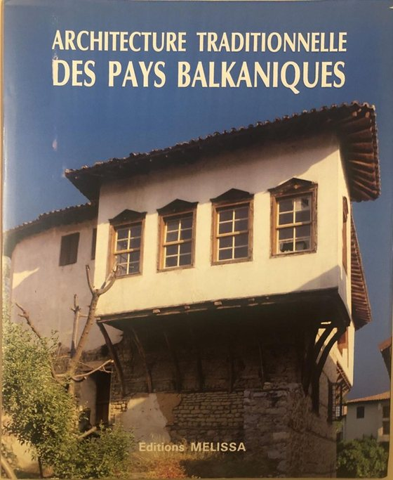
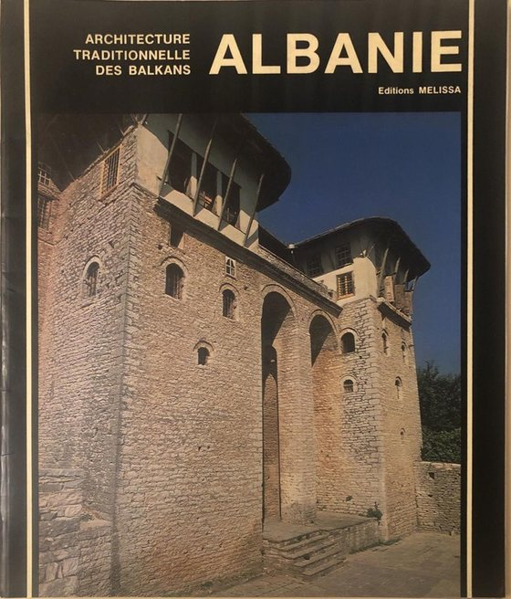
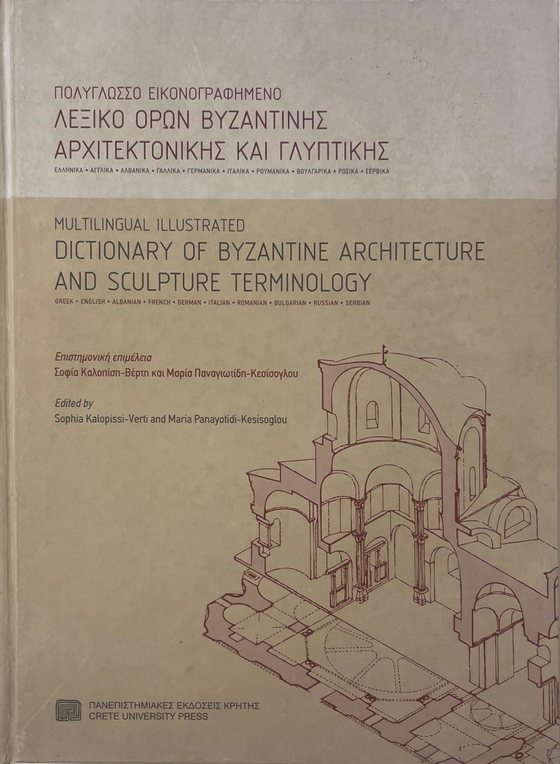
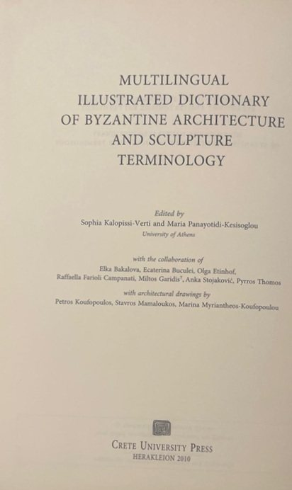
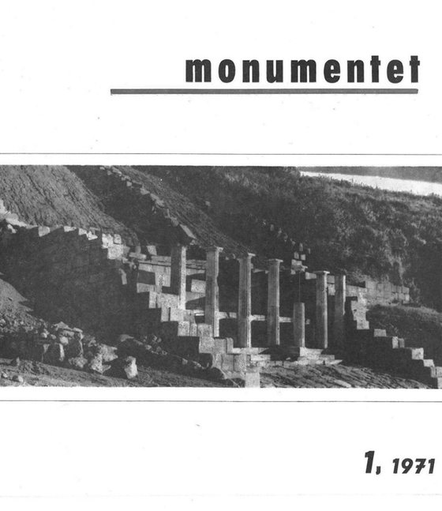
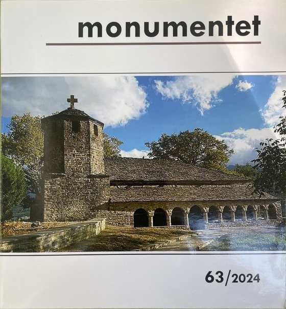

Arkitekt, studiues dhe restaurator i trashëgimisë kulturore
Mbi gjashtë dekada studimi mbi arkitekturën pasbizantine, banesën popullore dhe restaurimin e monumenteve në Shqipëri. Veprat e mëposhtme janë vënë këtu nga vetë autori, të lira për t'u lexuar dhe shkarkuar nga kushdo.
Monografi mbi arkitekturën kishtare të shek. XVI–XIX, me analizë morfologjike sipas rajoneve dhe analizë tipologjike. Numri i monumenteve të studiuara u rrit nga 88 në botimin e parë në 111 në këtë ribotim. Botimi u plotësua me të dhëna historike, ilustrime dhe me mbishkrime të plota nga libri i Th. Popës mbi mbishkrimet e kishave në Shqipëri.
Vëllimet I dhe II · shqip–anglisht · 2024 · 904 faqe
Mbi tridhjetë shembuj restaurimi të realizuar apo të drejtuar nga vetë autori, nga kishat e banesat e Shqipërisë, nga monumentet e Malit të Shenjtë, të Selanikut etj., të grupuara sipas problemeve që ato paraqisnin. Libri përmban edhe studimet për vënien në mbrojtje shtetërore të qendrave historike, ansambleve arkitektonike, banesave e kishave.
Historia e zhvillimit urbanistik dhe arkitektonik të Korçës dhe tiparet e reja që morën prej tij urbanistika, banesa qytetare, pazari dhe ndërtimet publike. Kushtuar qytetarëve korçarë.
Njëzet e pesë vjet artikujsh e kumtesash të mbajtura në simpoziume kombëtare dhe ndërkombëtare gjatë viteve të emigracionit, mbledhur në një vëllim të vetëm.
Bashkautorë: A. Meksi, A. Baçe, E. Riza, Gj. Karaiskaj, P. Thomo
Botim i dytë i ripunuar · 2016 · 887 faqe
Vepra përgjithësuese mbi arkitekturën shqiptare nga fillimet deri më 1912, me pesë bashkautorë. Botimi i dytë u realizua nën përkujdesjen e Pirro Thomos.
P. Thomo redaktor përgjegjës; bashkautorë A. Muka, E. Riza
2004 · 475 faqe
Vëllimi i parë i korpusit «Trashëgimi kulturor i popullit shqiptar», botuar nën kujdesin e Akademisë së Shkencave, me Pirro Thomon redaktor përgjegjës.
Jeta dhe vepra e Theofan Popës, autorit të «Mbishkrimet e kishave të Shqipërisë» dhe të shumë botimeve mbi piktorët dhe artin mesjetar kishtar. I persekutuar nga regjimi komunist. Shkruar bashkë me Dr. Anisa Ymerin.
Prof. Dr. Pirro Thomo (lindur më 1939) i ka kushtuar jetën gjurmimit, dokumentimit dhe restaurimit të monumenteve të kulturës në Shqipëri. Është autor i mbi njëzet botimeve dhe i mbi gjashtëdhjetë artikujve shkencorë të botuar brenda dhe jashtë vendit. Bashkautor me E. Rizën në vëllimin Architecture Traditionnelle des Pays Balkaniques (Éditions Melissa, 1990) dhe bashkëpunëtor në Fjalorin e ilustruar shumëgjuhësh të terminologjisë së arkitekturës dhe skulpturës bizantine (Crete University Press, 2010), me kujdesin e Sophia Kalopissi-Verti dhe Maria Panayotidi-Kesioglou, Universiteti i Athinës.
Ka drejtuar ose bashkëpunuar në më shumë se tridhjetë projekte restaurimi, përfshirë ndërhyrje në manastiret e Malit të Shenjtë dhe në Qendrën Historike të Selanikut. Restaurimi i kishës së Shën Panteleimonit në Selanik, të cilin e drejtoi, u vlerësua me çmim nga Europa Nostra. Si kryeredaktor ka drejtuar botimin e 14 numrave të revistës Monumentet, nga nr. 51/2009–2010 deri te nr. 63/2024 (numri i parë i revistës u botua më 1971).

Architecture traditionnelle des pays balkaniques Éditions Melissa, Athinë 1990

Vëllimi Albanie i së njëjtës seri, shkruar bashkë me E. Rizën

Fjalor shumëgjuhësh i ilustruar i terminologjisë së arkitekturës dhe skulpturës bizantine Crete University Press, 2010

Faqja e titullit, ku Pirro Thomo shënohet ndër bashkëpunëtorët

Monumentet nr. 1, 1971 — numri i parë i revistës

Monumentet nr. 63/2024 — numri i fundit që drejtoi si kryeredaktor
Mbi këtë botim
Të drejtat e autorit mbi këto vepra i takojnë Prof. Dr. Pirro Thomos, i cili ka dhënë pëlqimin që ato të lexohen dhe të shkarkohen falas nga kushdo, për qëllime studimi dhe njohjeje. Ju lutemi t'i citoni si çdo botim tjetër.
Disa vepra janë shkruar me bashkautorë ose janë botuar nën kujdesin e institucioneve, të cilat mbajnë të drejtat e tyre përkatëse. Kjo është shënuar te faqja e secilës vepër.
Skedarët këtu janë përgatitur për lexim në ekran: fotografitë janë ripërpunuar në rezolucion më të ulët, ndërsa teksti mbetet i plotë dhe i qartë në çdo zmadhim.